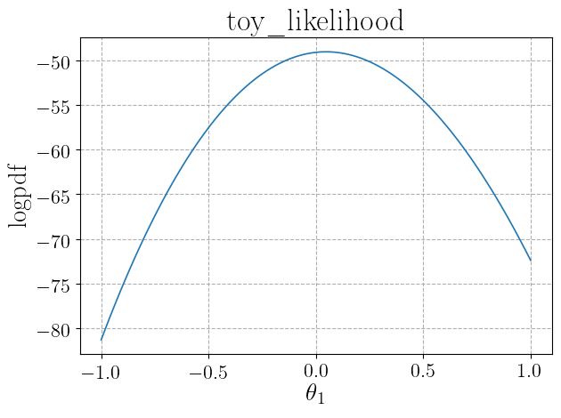
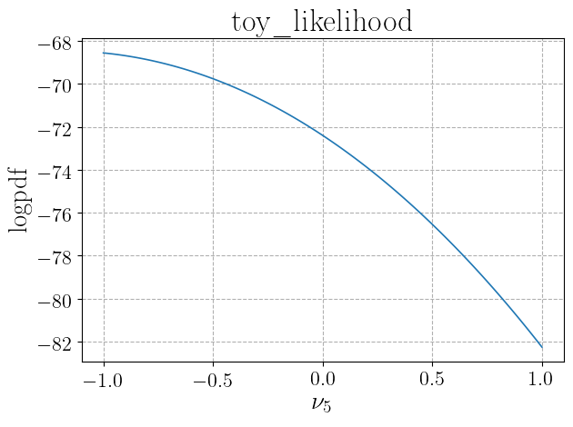

The Likelihood object¶
Summary¶
The Likelihood class acts as a container for the likelihood function.
It contains information on parameters initializations, positions, bounds, and labels, the logpdf function and its arguments, and methods that allow
one to plot the logpdf funcion and to compute its (profiled and global) maximiza.
In case in which the likelihood is obtained using the interface to the ATLAS histfactory workspaces given by
the Histfactory object, the logpdf is constructed from the pyhf.Model.logpdf method.
Usage¶
We give here a brief introduction to the use of the Likelihood class. Refer to the
full class documentation for more details.
The Likelihood object can be created both by directly inputing the relevant arguments or
automatically,
in case the likelihood function comes from an ATLAS histfactory workspace, by the Histfactory object
through the Histfactory.get_likelihood_object method. In the
the Histfactory object Usage section of the documentation we already gave an example of the latter method.
We give here a very simple (toy) example of creation of the object from direct input_json_file.
The first time a Likelihood object is created, the logpdf, logpdf_args (
if required by logpdf), pars_pos_poi, pars_pos_nuis, and pars_init arguments need to be specified.
Optionally, also the arguments pars_labels and pars_bounds related to likelihood parameters can be specified.
Moreover, the user may specify the additional arguments
output_folder containing the path (either relative or absolute) to a folder where output files will be saved and
name with the name of the object (which is otherwise automatically generated).
To give a simple example, let us start by creating a very simple toy experiment with 10 bins, one nuisance parameter per
bin and one signal strength parameter. The logpdf function could be defined by the cose:
import numpy as np
nbI_nominal = np.array(list(reversed([i for i in range(100,1100,100)]))) # Nominal background
nbI_obs = np.random.poisson(nbI_nominal) # Observed counts
nsI_reference = np.array(list(reversed([i for i in range(10,110,10)]))) # Signal prediction for signal strength mu=1
def nbI(delta):
# Background in each bin as function of the 10 nuisance parameters delta
delta = np.array(delta)
return np.array([nbI_nominal[i]*(1+0.1)**delta[i] for i in range(len(delta))])
def nsI(mu):
# Signal in each bin as function of the signal strength parameter mu
return mu*nsI_reference
def nI(pars):
# Expected counts in each bin
mu = pars[0]
delta = pars[1:]
return np.array(nsI(mu)+nbI(delta))
def loglik(pars, obs):
# Log of Poisson likelihood
exp = nI(pars)
logfact = np.array(list(map(lambda x: np.math.lgamma(x+1), obs)))
return np.sum(-1*logfact+obs*np.log(exp)-exp)
def logprior(pars):
# Log of normal distribution for deltas and uniform [-5,5] distribution for mu
mu = pars[0]
delta = pars[1:]
delta_prior = -1/2*np.sum(delta**2+np.full(len(delta),np.log(2*np.pi)))
return delta_prior-np.log(1/(10))
def logpdf(pars, obs):
# Sum of log-likelihood and log-prior
return loglik(pars, obs)+logprior(pars)
This takes as arguments the parameters (mu, delta) and the observed counts. We can now define arguments related to
parameters (we will not define labels, that will be automatically set by the object initialization)
and initialize the Likelihood with a few lines of code:
import DNNLikelihood
pars_pos_poi = [0]
pars_pos_nuis = range(1,11)
pars_init = np.insert(np.full(10,0),0,1)
pars_labels = None,
pars_bounds = np.concatenate((np.array([[-5,5]]),
np.vstack([np.full(10,-np.inf),
np.full(10,np.inf)]).T))
likelihood = DNNLikelihood.Likelihood(name = 'toy',
logpdf = logpdf,
logpdf_args = [nbI_obs],
pars_pos_poi = pars_pos_poi,
pars_pos_nuis = pars_pos_nuis,
pars_init = pars_init,
pars_labels = None,
pars_bounds = pars_bounds,
output_folder = "<my_output_folder>")
When the object is created, it is automatically saved and three files are created:
<my_output_folder>/toy_likelihood.pickle
<my_output_folder>/toy_likelihood.json
<my_output_folder>/toy_likelihood.log
See the documentation of the Likelihood.save and of the corresponding methods
with a _json,
_log,
and _pickle suffix.
The object can also be initialized importing it from saved files. In this case only the input_file argument needs to be specified,
while all other arguments are ignored. One could also optionally specify a new output_folder. In case this is not specified, the
Likelihood.output_folder attribute from the imported object is used and the object is
saved overwriting existing files. If a new output_folder is specified, then the updated object is saved to the new location.
For instance we could import the object created above with
import DNNLikelihood
likelihood = DNNLikelihood.Likelihood(input_file="<my_output_folder>/toy_likelihood")
When the object is imported, the Likelihood.log
attribute is updated and saved in the corresponding file Likelihood.output_log_file.
The logpdf for a given value of the parameters (for instance the
Likelihood.pars_init
can be obtained through
likelihood.logpdf_fn(likelihood.pars_init,*likelihood.logpdf_args)
We can check the logpdf depencence on the input parameters by plotting it with the method
Likelihood.plot_logpdf_par. For instance, one can get the plot
for the parameters 0 (signal strength) and 5 (nuisance parameter) in the range (-1,1) with all other
parameters set to their value in Likelihood.pars_init, the plots can be
obtained through
likelihood.plot_logpdf_par([[0,-1,1],[5,-1,1]])
This prints the following plots in the active console
 {kind=link}
{kind=link}
And saves two files, whose paths are stored in the Likelihood.figures_list.
One could also optionally choose a different central value for the parameters that are kept fixed by passing an argument
pars_init to the Likelihood.plot_logpdf_par method.
The maximum of the logpdf, and the corresponding parameters values can be obtained with the
Likelihood.compute_maximum_logpdf and is stored in the
Likelihood.X_logpdf_max and
Likelihood.Y_logpdf_max attributes:
likelihood.compute_maximum_logpdf()
print(likelihood.X_logpdf_max)
print(likelihood.Y_logpdf_max)
>>> [0.04380427 0.27652363 0.02134356 -0.15662528 -0.0267759 -0.30837557
0.35269854 -0.36984361 -0.08494277 -0.13147428 0.52011438]
>>> 47.26988825197074
Finally, one could profile the logpdf with respect to some of the parameters and compute local maxima through
the Likelihood.compute_profiled_maxima method. This
is useful both to initialize chains in an MCMC or to perform profiled likelihood inference. The result is stored in the
Likelihood.X_prof_logpdf_max and
Likelihood.Y_prof_logpdf_max attributes.
For instance, profiling with respect to the nuisance parameters for 10 values of the signal strength parameter
on a grid in the (-1,1) interval can be obtained as follows:
likelihood.compute_profiled_maxima(pars=[0],pars_ranges=[[-1,1,10]],spacing="grid",verbose=2)
print(likelihood.X_prof_logpdf_max)
print(likelihood.Y_prof_logpdf_max)
>>> [[-1. 1.21169326 0.96592494 0.7891095 0.89669271 0.61408032
1.21501547 0.49455945 0.71604701 0.58415075 1.07251509]
[-0.77777778 1.01767165 0.76971591 0.59234143 0.7041785 0.42121161
1.03431711 0.31223278 0.54606212 0.430467 0.95205154]
...]
>>> [51.71637546558055 50.06649195316649 48.78240790167662 47.88015165741762
47.37632133357318 47.28808819443674 47.63319733946957 48.429965264153346
49.69727384417462 51.4545602580758]
The verbose=2 argument allows to print a progress bar to monitor the evolution of the calculation of the maxima.
If one prefers to generate signal strength values randomly (with a flat distribution) instead that on a grid, the
argument spacing="random" can be passed.
Each of the above calls Likelihood methods have updated the
Likelihood.log attribute and the corresponding
Likelihood.output_log_file file.
Even though the files corresponding to the saved object are usually kept sync with the object state, manual change of some attributes
does not update them. Nevertheless, the full object can be saved at any time through
likelihood.save(overwrite=True)
The overwrite=True ensure that the output files (generated when initializing the object) are updated.
Finally, we can save a likelihood script file that will be used to initialize a Sampler object
(see the Sampler object) as
likelihood.save_script()
which produces the file <my_output_folder>/toy_likelihood_script.py.
Classs¶
-
class
DNNLikelihood.Likelihood(name=None, logpdf=None, logpdf_args=None, pars_pos_poi=None, pars_pos_nuis=None, pars_init=None, pars_labels=None, pars_bounds=None, output_folder=None, input_file=None, verbose=True)[source]¶ This class is a container for the
Likelihoodobject, storing all information of the likelihood function. The object can be directly created or obtained from an ATLAS histfactory workspace through theDNNLikelihood.Histfactoryobject (see the Histfactory object).
Arguments¶
name¶Name of the
Likelihoodobject. It is used to build theLikelihood.nameattribute.
type:
strorNonedefault:
None
logpdf¶Callable function returning the logpdf given parameters and additional arguments, passed through the
logpdf_argsargument.
type:
callableorNonedefault:
None
Could accept
x_pars
Values of the parameters for which logpdf is computed. It could be a single point in parameter space corresponding to an array with shape
(n_pars,)or a list of points corresponding to an array with shape(n_points,n_pars).
type:
numpy.ndarraypossible shapes:
(n_pars,)or(n_points,n_pars)args
List of additional arguments required by the
logpdffunction and passed through thelogpdf_argsinput argument.
type:
listor Noneshape of list:
[ ]Could return
floatornumpy.ndarraywith shape(n_points,)
logpdf_args¶Additional arguments required by the
logpdffunction.
type:
listorNoneshape of list:
[ ]default:
None
pars_pos_poi¶List or numpy array containing the positions in the parameters list of the parameters of interest. It is used to build the
Likelihood.pars_pos_poiattribute.
type:
listor`numpy.ndarrayshape:
(n_poi,)default:
None
pars_pos_nuis¶List or numpy array containing the positions in the parameters list of the nuisance parameters. It is used to build the
Likelihood.pars_pos_nuisattribute.
type:
listornumpy.ndarrayshape:
(n_nuis,)default:
None
pars_init¶List or numpy array containing an initial value for the parameters. It is used to build the
Likelihood.pars_initattribute.
type:
listor`numpy.ndarrayshape:
(n_pars,)default:
None
pars_labels¶List containing the parameters names as strings. Parameters labels are always parsed as “raw” strings (like, for instance,
r"%s"%pars_labels[0]) and can contain latex expressions that are properly compiled when making plots. It is used to build theLikelihood.pars_labelsattribute.
type:
listshape:
[ ]length:
n_parsdefault:
None
pars_bounds¶List or numpy array containing containing bounds for the parameters. It is used to build the
Likelihood.pars_boundsattribute.
type:
numpy.ndarrayorNoneshape:
(n_pars,2)default:
None
output_folder¶Path (either relative to the code execution folder or absolute) where output files are saved. It is used to set the
Likelihood.output_folderattribute.
type:
strorNonedefault:
None
input_file¶File name (either relative to the code execution folder or absolute, with or without any of the .json or .pickle extensions) of a saved
Likelihoodobject. It is used to set theLikelihood.input_fileattribute.
type:
strorNonedefault:
None
verbose¶Argument used to set the verbosity mode of the
Likelihood.__init__method and the default verbosity mode of all class methods that accept averboseargument. See Verbosity mode.
type:
booldefault:
True
Attributes¶
DNNLikelihood.Likelihood.output_figures_base_file¶Absolute path to the exported figures. It includes the base figure name and is automatically generated from the
Likelihood.output_folderandLikelihood.nameattributes.
type:
str
DNNLikelihood.Likelihood.figures_list¶List of absolute paths to the generated figures.
type:
listofstr
DNNLikelihood.Likelihood.generic_pars_labels¶List containing parameters names automatically generated by the function
utils.define_generic_pars_labels. All parameters of interest are namedr"$\theta_{i}$"withiranging between one to the number of parameters of interest and all nuisance parameters are namedr"$\nu_{j}$"withjranging between one to the number of nuisance parameters. Parameters labels are always parsed as “raw” strings (like, for instance,r"%s"%generic_pars_labels[0]) and can contain latex expressions that are properly compiled when making plots.
type:
listshape:
[ ]length:
n_pars
DNNLikelihood.Likelihood.input_file¶Attribute corresponding to the input argument
input_file. Whenever this parameter is notNonetheLikelihoodobject is reconstructed from input files (see theLikelihood.__init__method for details).
type:
strorNone
DNNLikelihood.Likelihood.input_json_file¶Absolute path to the .json file containing saved
Likelihoodjson (see theLikelihood.save_jsonmethod for details). It is automatically generated from the attributeLikelihood.input_file. When the latter isNone, the attribute is set toNone.
type:
strorNone
DNNLikelihood.Likelihood.input_log_file¶Absolute path to the .log file containing saved
Likelihoodlog (see theLikelihood.save_logmethod for details). It is automatically generated from the attributeLikelihood.input_file. When the latter isNone, the attribute is set toNone.
type:
strorNone
DNNLikelihood.Likelihood.input_pickle_file¶Absolute path to the .pickle file containing saved
Likelihoodpickle (see theLikelihood.save_picklemethod for details). It is automatically generated from the attributeLikelihood.input_file. When the latter isNone, the attribute is set toNone.
type:
strorNone
DNNLikelihood.Likelihood.output_json_file¶Absolute path to the .json file where part of the
Likelihoodobject is saved (see theLikelihood.save_jsonmethod for details). It is automatically generated from theLikelihood.output_folderandLikelihood.nameattributes.
type:
str
DNNLikelihood.Likelihood.output_log_file¶Absolute path to the .log file where the
Likelihoodobject log is saved (see theLikelihood.save_logmethod for details). It is automatically generated from theLikelihood.output_folderandLikelihood.nameattributes.
type:
str
DNNLikelihood.Likelihood.output_pickle_file¶Absolute path to the .pickle file where part of the
Likelihoodobject is saved (see theLikelihood.save_picklemethod for details). It is automatically generated from theLikelihood.output_folderandLikelihood.nameattributes.
type:
str
DNNLikelihood.Likelihood.script_file¶Absolute path to the .py script containing the code necessary to intantiate a
Likelihoodobject and define the corresponing parameters. This file can be generated using theLikelihood.save_scriptmethod and is used to initialize aSamplerobject (see the Sampler object). This is to ensure that that Markov Chain Monte Carlo properly runs in parallel (using the multiprocessing package) inside Jupyter notebooks also on the Windows OS. It is automatically generated from theLikelihood.output_folderandLikelihood.nameattributes.
type:
str
DNNLikelihood.Likelihood.log¶Dictionary containing a log of the
Likelihoodobject calls. The dictionary has datetime strings as keys and actions as values. Actions are also dictionaries, containing details of the methods calls.
type:
dictkeys:
datetime.now().strftime("%Y-%m-%d-%H-%M-%S.%fZ")[:-3]values:
dictwith the following structure:
- “action” (value type:
str)Short description of the action. possible values:
"computed maximum logpdf","computed profiled maxima","created","loaded","saved","saved figure"
- “pars” (value type:
listofint)Input argument of the
Likelihood.compute_profiled_maximamethod.
- “pars_ranges” (value type:
listoflist)Input argument of the
Likelihood.compute_profiled_maximamethod.
- “number of maxima” (value type:
int)Number of maxima computed by the
Likelihood.compute_profiled_maximamethod.
- “file name” (value type:
str)File name of file involved in the action.
- “file path” (value type:
str)Path of file involved in the action.
- “files names” (value type:
listofstr)List of file names of files involved in the action.
- “files paths” (value type:
listofstr)List of paths of files involved in the action.
DNNLikelihood.Likelihood.logpdf¶Attribute corresponding to the input argument
logpdf. When this input isNonethe argumentinput_fileshould be given to import the attribute from files. This function is used to construct theLikelihood.logpdf_fnmethod.
type:
callable
Could accept
x_pars
Values of the parameters for which logpdf is computed. It could be a single point in parameter space corresponding to an array with shape
(n_pars,)or a list of points corresponding to an array with shape(n_points,n_pars).
type:
numpy.ndarraypossible shapes:
(n_pars,)or(n_points,n_pars)args
List of additional arguments required by the
logpdffunction and passed through thelogpdf_argsinput argument.
type:
listor Noneshape of list:
[ ]Could return
Value or array of values of the logpdf.
type:
floatornumpy.ndarrayshape for numpy.ndarray:
(n_points,)
DNNLikelihood.Likelihood.logpdf_args¶Attribute corresponding to the input argument
logpdf_args.
type:
listorNoneshape of list:
[ ]
DNNLikelihood.Likelihood.name¶Name of the
Likelihoodobject generated from thenameinput argument. IfNoneis passed, thennameis assigned the valuemodel_" + datetime.now().strftime("%Y-%m-%d-%H-%M-%S.%fZ")[:-3]+"_likelihood", while if a string is passed, the"_likelihood"suffix is appended (preventing duplication if it is already present). It is used to generate output files names.
type:
str
DNNLikelihood.Likelihood.nameNumber of dimensions of the likelihood, corresponding to the number of parameters. It is set equal to the lenght of the array
Likelihood.pars_init.
type:
int
DNNLikelihood.Likelihood.output_folder¶Absolute path corresponding to the input argument
output_folder. If the latter isNone, thenoutput_folderis set to the code execution folder. If the folder does not exist it is created by theutils.check_create_folderfunction.
type:
str
DNNLikelihood.Likelihood.pars_bounds¶Numpy array corresponding to the input argument
pars_bounds. If the input argument isNonethen bounds for all parameters are set to[-np.inf,np.inf]. It is used to build theLikelihood.logpdf_fnso that the logpdf evaluates to-np.infif any of the parameter has a value outside these bounds.
type:
numpy.ndarrayshape:
(n_pars,2)
DNNLikelihood.Likelihood.pars_init¶Numpy array corresponding to the input argument
pars_init. This initialization is used as initial value for optimizingLikelihood.logpdf_fnwith theLikelihood.compute_maximum_logpdfand theLikelihood.compute_profiled_maximamethods.
type:
numpy.ndarrayshape:
(n_pars,)
DNNLikelihood.Likelihood.pars_labels¶List corresponding to the input argument
pars_labels. If the input argument isNonethenLikelihood.pars_labelsis set equal to the automatically generatedLikelihood.generic_pars_labels. Parameters labels are always parsed as “raw” strings (like, for instance,r"%s"%pars_labels[0]) and can contain latex expressions that are properly compiled when making plots.
type:
listshape:
[ ]length:
n_pars
DNNLikelihood.Likelihood.pars_pos_nuis¶Numpy array corresponding to the input argument
pars_pos_nuis.
type:
listor`numpy.ndarrayshape:
(n_nuis,)
DNNLikelihood.Likelihood.pars_pos_poi¶Numpy array corresponding to the input argument
pars_pos_poi.
type:
listor`numpy.ndarrayshape:
(n_poi,)
DNNLikelihood.Likelihood.verbose¶Attribute corresponding to the input argument
verbose. It represents the verbosity mode of theLikelihood.__init__method and the default verbosity mode of all class methods that accept averboseargument. See Verbosity mode.
type:
boolor`int
DNNLikelihood.Likelihood.X_logpdf_max¶Numpy array containing the values of parameters at the global maximum of the logpdf computed with the
Likelihood.compute_maximum_logpdfmethod. The attribute isNoneunless the latter method has been called or theLikelihoodobject has been imported from file and already contained a value for the attribute.
type:
numpy.ndarrayorNoneshape:
(n_pars,)
DNNLikelihood.Likelihood.X_prof_logpdf_max¶Numpy array containing the values of parameters at different local maxima of the logpdf computed with the
Likelihood.compute_profiled_maximamethod The attribute isNonecompute_profiled_maxima object has been imported from file and already contained a value for the attribute. This attribute is used to initialize walkers in the :class:Sampler <DNNLikelihood.Sampler>object (see the Likelihood object).
type:
numpy.ndarrayorNoneshape:
np.array(n_points,n_pars)
DNNLikelihood.Likelihood.X_prof_logpdf_max_tmp¶Same as
Likelihood.X_prof_logpdf_max. It is assigned only when attempting to append newly generated profiled maxima to an incompatible existingLikelihood.X_prof_logpdf_max. This is a temporary attribute and it is not saved by theLikelihood.savemethod.
type:
numpy.ndarrayorNoneshape:
np.array(n_points,n_pars)
DNNLikelihood.Likelihood.Y_logpdf_max¶Value of logpdf at its global maximum computed with the
Likelihood.compute_maximum_logpdfmethod. The attribute isNoneunless the latter method has been called or theLikelihoodobject has been imported from file and already contained a value for the attribute.
type:
floatorNone
DNNLikelihood.Likelihood.Y_prof_logpdf_max¶Numpy array containing the values of logpdf at different local maxima computed with the
Likelihood.compute_profiled_maximamethod. The attribute isNoneunless the latter method has been called or theLikelihoodobject has been imported from file and already contained a value for the attribute.
type:
numpy.ndarrayorNoneshape:
np.array(n_points,)
DNNLikelihood.Likelihood.Y_prof_logpdf_max_tmp¶Same as
Likelihood.Y_prof_logpdf_max. It is assigned only when attempting to append newly generated profiled maxima to an incompatible existingLikelihood.X_prof_logpdf_max. This is a temporary attribute and it is not saved by theLikelihood.savemethod.
type:
numpy.ndarrayorNoneshape:
np.array(n_points,)
Methods¶
Likelihood.__init__(name=None, logpdf=None, logpdf_args=None, pars_pos_poi=None, pars_pos_nuis=None, pars_init=None, pars_labels=None, pars_bounds=None, output_folder=None, input_file=None, verbose=True)[source]¶The
Likelihoodobject can be initialized in two different ways, depending on the value of theinput_fileargument.
input_fileisNone(default)All other arguments are parsed and saved in corresponding attributes. If no
nameis given, then one is created. The object is saved upon creation through theLikelihood.savemethod.
input_fileis notNoneThe object is reconstructed from the input files through the private method
Likelihood.__loadIf the input argumentoutput_folderisNone(default), the attributeLikelihood.output_folderis set from the input file, otherwise it is set to the input argument.Arguments
See class Arguments documentation.
Produces file
Likelihood._Likelihood__check_define_input_files()¶Sets the attributes corresponding to input files
Likelihood.input_json_file,Likelihood.input_log_file, andLikelihood.input_pickle_filedepending on the value of theLikelihood.input_fileattribute.
Likelihood._Likelihood__check_define_output_files()¶Sets the attributes corresponding to output files
Likelihood.output_json_file,Likelihood.output_log_file,Likelihood.output_pickle_file,Likelihood.script_file, andLikelihood.output_figures_base_filedepending on the value of theLikelihood.input_fileandLikelihood.output_folderattributes.
Likelihood._Likelihood__check_define_name()¶Private method that defines the
Likelihood.nameattribute. IfLikelihood.nameisNoneit replaces it with"model_"+datetime.now().strftime("%Y-%m-%d-%H-%M-%S.%fZ")[:-3]+"_likelihood", otherwise it appends the suffix “_likelihood” (preventing duplication if it is already present).
Likelihood._Likelihood__check_define_pars(verbose=None)¶Private method that checks the consistency of the
Likelihood.pars_pos_nuis,Likelihood.pars_pos_poi,Likelihood.pars_labels, andLikelihood.pars_boundsattributes and convertsLikelihood.pars_pos_nuis,Likelihood.pars_pos_poi, and andLikelihood.pars_boundsto numpy arrays. If no parameters positions are specified, all parameters are assumed to be parameters of interest. If only the position of the parameters of interest or of the nuisance parameters is specified, the other is automatically generated by matching dimensions. If labels are not provided thenLikelihood.pars_labelsis set to the value ofLikelihood.generic_pars_labels. If parameters bounds are not provided, they are set to(-np.inf,np.inf). A check is performed on the length of the four attributes and an Exception is raised if the length does not matchLikelihood.ndims.
Likelihood._Likelihood__load(verbose=None)¶Private method used by the
Likelihood.__init__one to import a previously savedLikelihoodobject from the filesLikelihood.input_json_file,Likelihood.input_json_fileandLikelihood.input_pickle_file.
Arguments
verbose
Verbosity mode. See the Verbosity mode documentation for the general behavior.
type:
booldefault:
None
Likelihood._Likelihood__set_pars_labels(pars_labels)¶Private method that returns the
pars_labelschoice based on thepars_labelsinput.
Arguments
pars_labels
Could be either one of the keyword strings
"original"and"generic"or a list of labels strings with the length of the parameters array. Ifpars_labels="original"orpars_labels="generic"the function returns the value ofLikelihood.pars_labelsorLikelihood.generic_pars_labels, respectively, while ifpars_labelsis a list, the function just returns the input.
type:
listorstrshape of list:
[ ]accepted strings:
"original","generic"
Likelihood.save_log(overwrite=False, verbose=None)[source]¶Saves the content of the
Likelihood.logattribute in the fileLikelihood.output_log_fileThis method is called by the methods
Likelihood.__init__withoverwrite=Trueandverbose=verbose_subifLikelihood.input_fileis notNone, and withoverwrite=Trueandverbose=verbose_subotherwise.
Likelihood.compute_maximum_logpdfwithoverwrite=Trueandverbose=verbose_sub
Likelihood.compute_profiled_maximawithoverwrite=Trueandverbose=verbose_sub
Likelihood.plot_logpdf_parwithoverwrite=Trueandverbose=verbose_sub
Likelihood.savewithoverwrite=overwriteandverbose=verbose
Likelihood.save_scriptwithoverwrite=Trueandverbose=verbose_subThis method is called by the
Likelihood.savemethod to save the entire object.
Arguments
overwrite
If
Trueif a file with the same name already exists, then it gets overwritten. IfFalseis a file with the same name already exists, then the old file gets renamed with theutils.check_rename_filefunction.
type:
booldefault:
Falseverbose
Verbosity mode. See the Verbosity mode documentation for the general behavior.
type:
booldefault:
NoneProduces file
Likelihood.save_json(overwrite=False, verbose=None)[source]¶
Likelihoodobjects are saved to three files: a .json, a .log, and a .pickle, corresponding to the three attributesLikelihood.output_json_file,Likelihood.output_log_file, andLikelihood.output_pickle_file. See theLikelihood.savemethod documentation for the list of saved attributes.This method is called by the
Likelihood.savemethod to save the entire object.
Arguments
overwrite
If
Trueif a file with the same name already exists, then it gets overwritten. IfFalseis a file with the same name already exists, then the old file gets renamed with theutils.check_rename_filefunction.
type:
booldefault:
Falseverbose
Verbosity mode. See the Verbosity mode documentation for the general behavior.
type:
booldefault:
NoneProduces file
Likelihood.save_pickle(overwrite=False, verbose=None)[source]¶
Likelihoodobjects are saved to three files: a .json, a .log, and a .pickle, corresponding to the three attributesLikelihood.output_json_file,Likelihood.output_json_file, andLikelihood.output_pickle_file. See theLikelihood.savemethod documentation for the list of saved attributes.This method saves the .pickle file making a dump of the following attributes (in order)
The
Likelihood.logpdfattribute is not directly pickable, for this reason it is dump using the cloudpickle package, which offers mote flexible python objects serialization.This method is called by the
Likelihood.savemethod to save the entire object.
Arguments
overwrite
If
Trueif a file with the same name already exists, then it gets overwritten. IfFalseis a file with the same name already exists, then the old file gets renamed with theutils.check_rename_filefunction.
type:
booldefault:
Falseverbose
Verbosity mode. See the Verbosity mode documentation for the general behavior.
type:
booldefault:
NoneProduces file
Likelihood.output_pickle_file
Likelihood.save(overwrite=False, verbose=True)[source]¶
Likelihoodobjects are saved according to the following table.
Saved
Atrributes
Method
X
✔
✔
Likelihood.output_figures_base_file
Likelihood.generic_pars_labels
Likelihood.ndims✔
This methos calls in order the
Likelihood.save_pickle,Likelihood.save_json, andLikelihood.save_logmethods to save the entire object.
Arguments
Same arguments as the called methods.
Produces files
Likelihood.save_script(verbose=True)[source]¶Saves the file
Likelihood.script_file.
Arguments
verbose
Verbosity mode. See the Verbosity mode documentation for the general behavior.
type:
booldefault:
NoneProduces file
Likelihood.logpdf_fn(x_pars, *logpdf_args)[source]¶This function is used to add constraints and standardize input/output of
Likelihood.logpdf. It is constructed from theLikelihood.logpdfandLikelihood.logpdf_argsattributes. In the caseLikelihood.logpdfaccepts a single array of parametersx_parsand returns the logpdf value one point at a time, then the function returns afloat, while ifLikelihood.logpdfis vectorized, i.e. accepts an array ofx_parsarrays and returns an array of logpdf values, then the function returns an array. Moreover, theLikelihood.logpdf_fnmethod is constructed to return the logpdf value-np.infif any of the parameters lies outsideLikelihood.pars_boundsor theLikelihood.logpdffunction returnsnan.
Arguments
x_pars
Values of the parameters for which logpdf is computed. It could be a single point in parameter space corresponding to an array with shape
(n_pars,)) or a list of points corresponding to an array with shape(n_points,n_pars), depending on the equivalent argument accepted byLikelihood.logpdf.
type:
numpy.ndarrayshape:
(n_pars,)or(n_points,n_pars)args
List of additional inputs needed by the
Likelihood.logpdffunction.
type:
listor Noneshape of list:
[]Returns
Value (values) of the logpdf.
type:
floatornumpy.ndarrayshape for numpy.ndarray:
(n_points,)
Likelihood.compute_maximum_logpdf(verbose=None)[source]¶Computes the maximum of
Likelihood.logpdf_fn. The values of the parameters and of logpdf at the global maximum are stored in the attributesLikelihood.X_logpdf_maxandLikelihood.Y_logpdf_max, respectively. The method uses the functioninference.find_maximumbased on scipy.optimize.minimize to find the minimum of minusLikelihood.logpdf_fn. Since the latter method already contains a bounded logpdf,pars_boundsis set toNonein theinference.find_maximumfunction to optimize speed. See the documentation of theinference.find_maximumfunction for details.
Arguments
verbose
Verbosity mode. See the Verbosity mode documentation for the general behavior.
type:
booldefault:
None
Likelihood.compute_profiled_maxima(pars, pars_ranges, spacing='grid', append=False, verbose=None)[source]¶Computes logal maxima of the logpdf for different values of the parameter
pars. For the list of prameterspars, ranges are passed aspars_rangesin the form(par_min,par_max,n_points)and an array of points is generated according to the argumentspacing(either a grid or a random flat distribution) in the interval. The points in the grid falling outsideLikelihood.pars_boundsare automatically removed. The values of the parameters and of logpdf at the local maxima are stored in the attributesLikelihood.X_prof_logpdf_maxandLikelihood.Y_prof_logpdf_max, respectively. They could be used both for frequentist profiled likelihood inference or as initial condition for Markov Chain Monte Carlo through theSamplerobject (see the Sampler object). The method uses the functioninference.find_prof_maximumbased on scipy.optimize.minimize to find the (local) minimum of minusLikelihood.logpdf_fn. Since the latter method already contains a bounded logpdf,pars_boundsis set toNonein theinference.find_prof_maximumfunction to optimize speed. See the documentation of theinference.find_prof_maximumfunction for details.When using interactive python in Jupyter notebooks if
verbose=2a progress bar is shown through the ipywidgets package.
Arguments
pars
List of positions of the parameters under which logpdf is not profiled.
type:
listshape:
[ ]example:
[1,5,8]pars_ranges
Ranges of the parameters
parscontaining(min,max,n_points).
type:
listshape:
[[ ]]example:
[[0,1,5],[-1,1,5],[0,5,3]]spacing
It can be either
"grid"or"random". Depending on its value then_pointsfor each parameter are taken on an equally spaced grid or are generated randomly in the interval.
type:
straccepted:
"grid"or"random"default:
gridappend
If
append=Falsethe values ofLikelihood.X_prof_logpdf_maxandLikelihood.Y_prof_logpdf_maxare replaced, otherwise, newly computed values are appended to the existing ones. If the shape ot the newly computed ones is incompatible with the one of the existing ones, new values are saved in the temporary attributesLikelihood.X_prof_logpdf_max_tmpandLikelihood.Y_prof_logpdf_max_tmpand a warning message is generated. Notice that the latter two attributes, as suggested by their names, are temporary, are not saved by theLikelihood.savemethod, and are always initialized toNonewhen theLikelihoodobject is created.
type:
straccepted:
"grid"or"random"default:
gridverbose
Verbosity mode. See the Verbosity mode documentation for the general behavior.
type:
booldefault:
None
Likelihood.plot_logpdf_par(pars=[[0, 0, 1]], npoints=100, pars_init=None, pars_labels='original', overwrite=False, verbose=None)[source]¶Plots the logpdf as a function of of the parameter
parin the range(min,max)using a numbernpointsof points. Only the parameterparis veried, while all other parameters are kept fixed to their value given inpars_init. The function used for the plot is provided by theLikelihood.logpdf_fn.
Arguments
pars
List of lists containing the position of the parametes in the parameters vector, and their minimum and maximum value for the plot. For example, to plot parameters
1in the rage(1,3)and parameter5in the range(-3,3)one should setpars = [[1,1,3],[5,-3,3]].
type:
listshape:
[[par,par_max,par_min],...]npoints
Number of points in which the
(par_min,par_max)range is divided to compute the logpdf and make the plot.
type:
intdefault:
100pars_init
Central point in the parameter space from which
paris varied and all other parameters are kept fixed. When its value is the defaultNone, the attributeLikelihood.pars_initis used.
type:
numpy.ndarrayorNoneshape:
(n_pars,)default:
Nonepars_labels
Argument that is passed to the
Likelihood.__set_pars_labelsmethod to set the parameters labels to be used in the plot.
type:
listorstrshape of list:
[ ]accepted strings:
"original","generic"overwrite
If
Trueif a file with the same name already exists, then it gets overwritten. IfFalseis a file with the same name already exists, then the old file gets renamed with theutils.check_rename_filefunction.
type:
booldefault:
Falseverbose
Verbosity mode. See the Verbosity mode documentation for the general behavior. The plots are shown in the interactive console calling
plt.show()only ifverbose=True.
type:
booldefault:
NoneProduces files
Likelihood.output_figures_base_file+ "_par_" + str(par[0]) + ".pdf"for eachparinpars.
Likelihood.set_verbosity(verbose)¶Method inherited by all classes (from the
Verbosityclass) used to set the verbosity mode. If the input argumentverboseisNone,verboseis set to the default class verbosityself.verbose. If the input argumentverboseis negative thenverbose_subis set to0(False), otherwise it is set toverbose.
Arguments
verbose
Verbosity mode. See the Verbosity mode documentation for more details.
type:
booldefault:
NoneReturns
[verbose,verbose_sub].